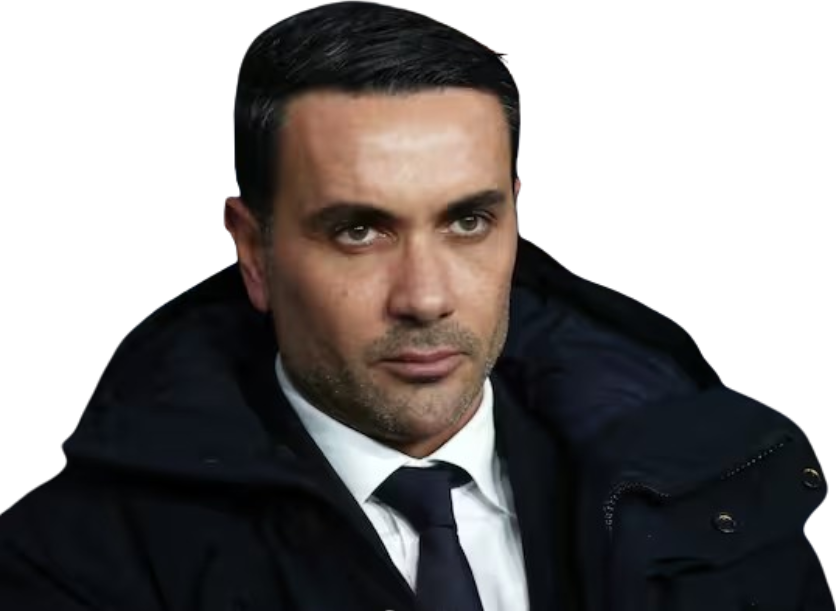
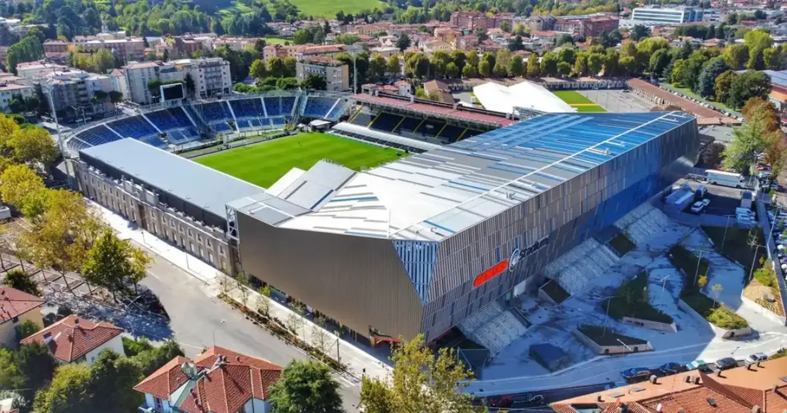

Treinador: Raffaele Palladino
Raffaele Palladino é um treinador italiano versátil, conhecido por liderar e potenciar jovens talentos. Após passagens de destaque pelo Monza e pela Fiorentina, onde obteve sucesso europeu, assumiu o comando da Atalanta para manter a competitividade do clube na elite de Itália.

Estádio: New Balance Arena
A New Balance Arena, situada em Bérgamo, é a moderna casa da Atalanta. O antigo Stadio Atleti Azzurri d'Italia foi totalmente remodelado, unindo uma arquitetura de vanguarda à atmosfera vibrante e intimidante dos adeptos nerazzurri.

Estilo de Jogo:
O estilo de jogo de Raffaele Palladino na Atalanta, marca uma evolução tática em relação ao passado do clube, focando-se numa maior flexibilidade e no equilíbrio entre posse e agressividade.
"La Maglia Sudata Sempre!"